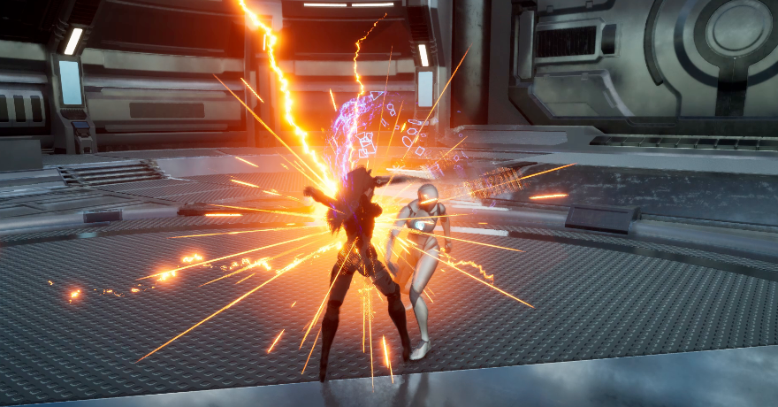

전투 실행·반응 전환
공격 중 피격됐을 때, 반응의 중단 요구와 현재 공격의 중단 허용을 함께 확인합니다.
중단 조건 확인 → 기존 공격 정리 → 피격 반응 시작
이전 공격의 충돌·트레일·실행 정보가 새 반응에 남지 않도록 정리합니다. 개별 피드백은 각자의 종료 기준을 따릅니다.
근접 액션 전투의 실행·판정·반응을 연결하고, 다수 적의 인식과 전투 참여를 다룬 프로젝트입니다.
근접 액션 전투와 다수 적의 전투 참여를 구현하는 게임 프로젝트입니다. 외부 캐릭터·모션·환경 에셋을 활용하고 게임플레이에 통합했습니다.
전투 동작과 다수 적의 역할 배정
다수 적 전투 시연 보기 (새 탭)포트폴리오 업데이트 ·

원하는 전투·AI 동작을 요구사항으로 구체화하고, 플레이 결과를 검토하며 보완 방향과 추가 확인 범위를 판단했습니다.
코드 분석·구현과 자동 검증, 영상·문서 구성을 수행했습니다. 세부 구현의 최초 작성 범위는 확인된 기록을 기준으로 구분합니다.
공격 중 피격됐을 때, 반응의 중단 요구와 현재 공격의 중단 허용을 함께 확인합니다.
중단 조건 확인 → 기존 공격 정리 → 피격 반응 시작
이전 공격의 충돌·트레일·실행 정보가 새 반응에 남지 않도록 정리합니다. 개별 피드백은 각자의 종료 기준을 따릅니다.
대상별 인식·피격 근거와 참여 상한으로 교전·경계·관찰 역할을 배정합니다.
참여 근거 수집 → 역할 배정 → 개별 AI 행동 결정
역할 배정과 실제 공격 실행은 별개입니다. 각 AI는 현재 실행 상태와 거리를 확인해 행동을 결정합니다.
같은 편 Enemy를 Sight 감지 단계에서 제외해 불필요한 감지 처리를 줄였습니다.
120마리 최초 유효 대상 인식 지연: 20.816초 → 1.053초
전후 각 3회, 실행별 p95의 중앙값입니다. 전체 프레임 시간 개선은 확인되지 않았습니다.
피격 반응이 끝나기 전에 공격자 정보가 만료되는 문제를 다뤘습니다.
TTL 감소를 해당 리액션 종료 후 시작
오래된·중복 종료와 공격자별 만료를 검사했습니다. 공격자 파괴 후 대기 기록 정리 보완안은 원본 미반영입니다.
이미 비워진 가드 상태의 정리 요청도 수락하도록 처리 조건을 보완했습니다.
피격 실행 → 이동 복원 → 다음 가드 확인
실제 PIE와 자동 정리 검사를 구분합니다. 반복 600회는 실제 전투 횟수가 아닌 상태 정리 호출입니다.
프로젝트 한 편과 세 프로젝트 통합본을 구분해 제공합니다.
전투·AI·피드백 시연을 기능별로 확인합니다.
실행 관리·전투 판정·AI·디버그 도구의 처리 흐름입니다.
활용 리소스와 프로젝트의 가공·설정·구현 범위를 구분합니다.
소스 코드와 README, 개발·학습 문서를 확인합니다.